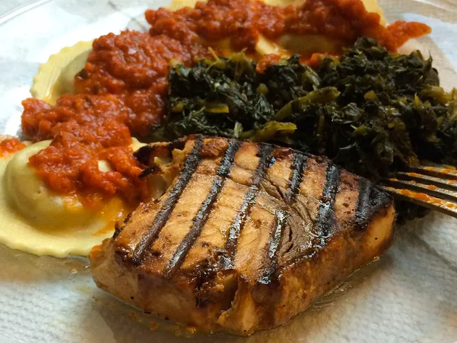

Grilled Marinated Swordfish

Description
A quick swordfish marinade made with white wine, lemon juice, and soy sauce adds delicious flavor to the fish when it's grilled.
Serve the grilled steaks with lemon wedges.
I have ever had along with dishes featuring miso.
Ingredients
Marinade:
- ⅓ cup white wine
- ¼ cup lemon juice
- 2 tablespoons soy sauce
- 2 tablespoons olive oil
- 4 cloves garlic
- 1 tablespoon poultry seasoning
- ¼ teaspoon salt
- ⅛ teaspoon pepper
Other:
- 4 swordfish steaks
- 1 tablespoon chopped fresh parsley Optional
- 4 slices lemon, for garnish Optional
Steps
- To make the marinade: Mix wine, lemon juice, soy sauce, olive oil, garlic,
poultry seasoning, salt, and pepper in a glass baking dish until combined.
- Lay swordfish steaks in marinade; turn to coat.
Refrigerate for 1 hour, turning frequently.
- Preheat an outdoor grill for high heat and lightly oil the grate.
- Cook swordfish steaks on the preheated grill until cooked through and tGarnish swordfish steaks with parsley and serve with lemon wedges.he fish flakes easily with a fork,
5 to 6 minutes per side; discard marinade. An instant-read thermometer inserted into the center of each steak
should read at least 145 degrees F (63 degrees C).
- Garnish swordfish steaks with parsley and serve with lemon wedges.